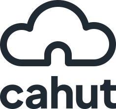
Charte graphique
Your home to publish and share what your AIs make.
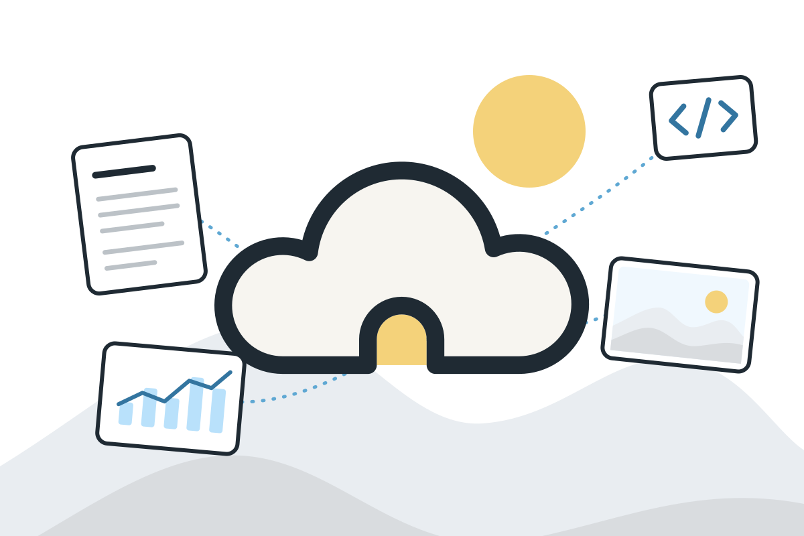
Vos IA fabriquent, Cahut fait vivre.
Cahut vient de « cahute », la petite cabane qu’on se construit soi-même : un abri simple et à soi, posé dans le nuage. Cloud et hut à la fois.
Your home to publish and share what your AIs make.
Chez soi
Les données restent sur votre serveur.
Neutre
Toutes les IA, aucun fournisseur favori.
Simple
Une commande pour installer, un lien pour partager.
Prudente
L’IA frappe avant toute action irréversible.
Accueillante
Claire, chaleureuse, sans jargon.
| Cahut est | Cahut n’est pas |
|---|---|
| calme | froide |
| précise | technique |
| chaleureuse | mignonne |
| sûre d’elle | autoritaire |
| ouverte | bavarde |
Un nuage, une porte.
Un nuage dessiné d’un seul trait, dont la base s’ouvre sur une porte. Le nuage dit « votre cloud », la porte dit « chez vous » : on y entre, et on frappe avant. Trait régulier, jonctions arrondies, aucune pointe : un abri, pas une forteresse.
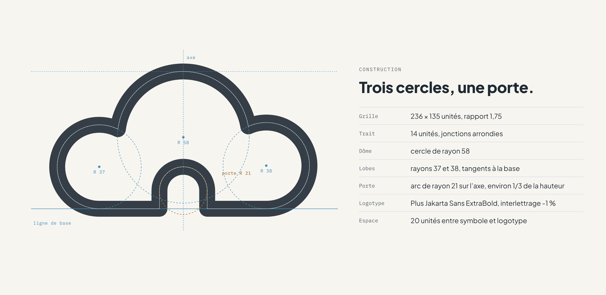
Les versions.
Le logo principal s’utilise par défaut. Le logo horizontal sert dans les en-têtes et barres de navigation, le symbole seul dans les petits espaces. L’icône d’application et l’avatar des réseaux allument la porte en Soft Yellow : quelqu’un est là. Toujours partir des fichiers SVG.
Protection et tailles minimales.
Autour du logo, gardez un espace libre au moins égal à p, la largeur extérieure de la porte. Sous 64 px de large, utilisez le symbole renforcé ; à 16 px, le favicon.
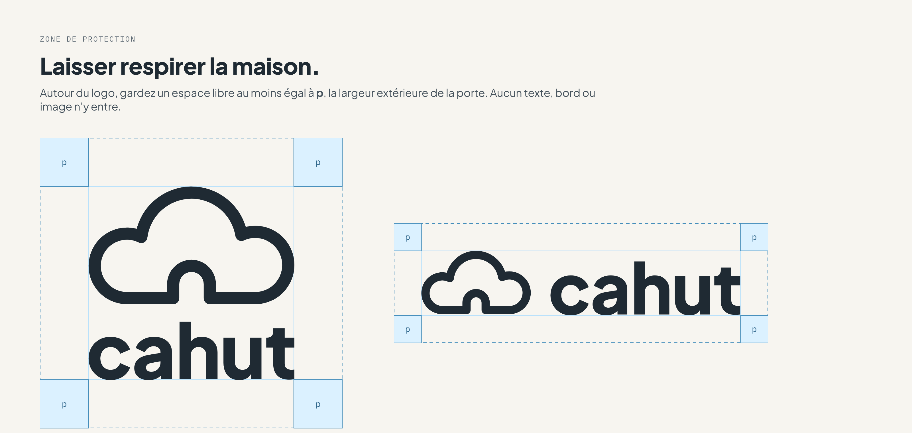
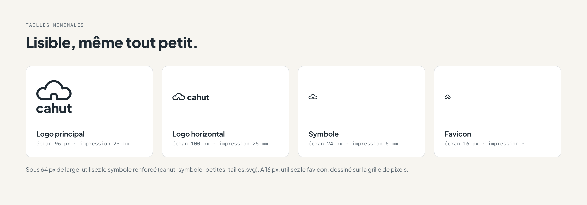
Ce qu’on ne fait pas.
Le logo ne se déforme pas, ne change pas de couleur, ne pivote pas, ne prend ni ombre ni effet, ne se recompose pas et ne se remplit pas, hors la porte éclairée de l’icône d’application et de l’avatar. Il a toujours 4,5:1 de contraste avec son fond.
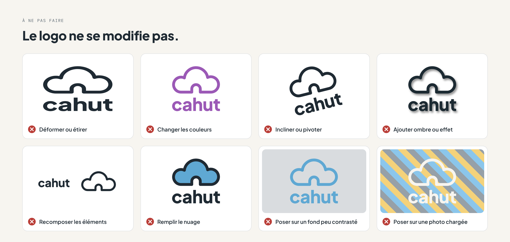
Une palette calme, une touche de lumière.
Paper domine, Ink structure, Sky accentue, Light Grey sépare, Soft Yellow éclaire. Le jaune reste rare : il signale la lumière, la présence ou ce qui attend une décision. Cliquez une valeur pour la copier.
Texte, logo, traits, fonds sombres
Fond principal, respiration
Accent, états actifs
Bordures, séparateurs, reliefs
Lumière, chaleur, attention
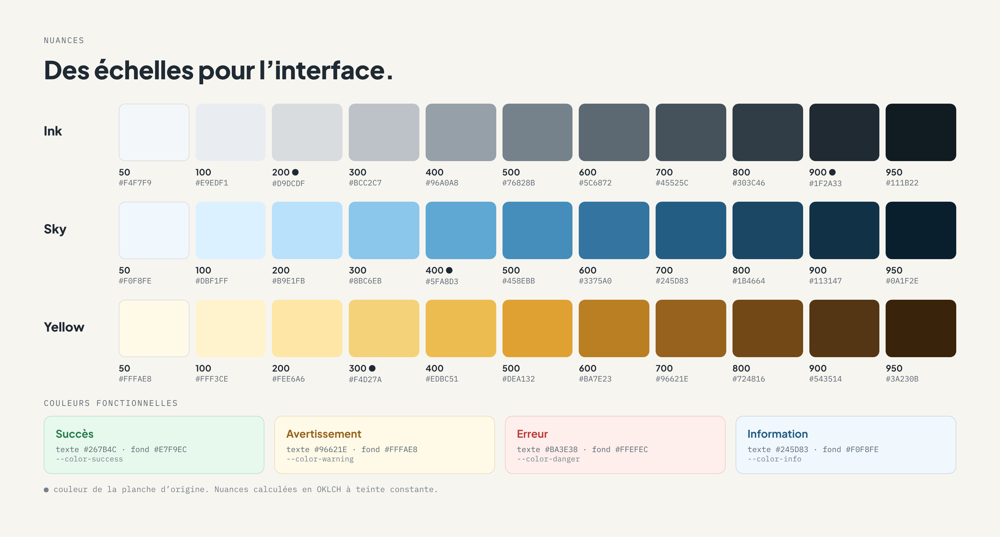
Lisible pour tout le monde.
Objectif WCAG 2.2 AA. Sur Sky, on écrit en Ink, jamais en blanc. Sky et Soft Yellow ne portent jamais de texte sur Paper. Une information ne passe jamais par la couleur seule. En mode sombre : fond Ink 950, texte Paper, accent Sky 400, liens Sky 300.
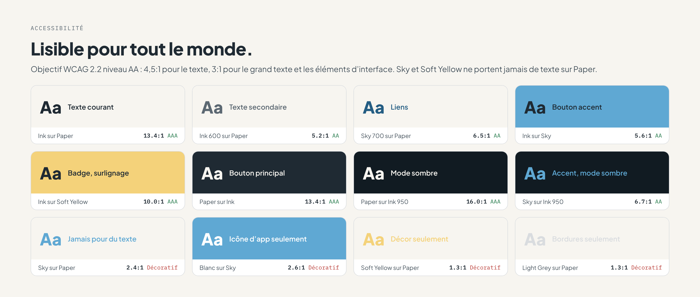
Deux familles, une voix.
Plus Jakarta Sans pour tout ce qui se lit, IBM Plex Mono pour tout ce qui se tape ou se copie : adresses, commandes, codes, horodatages. Les deux sont libres (SIL OFL) et fournies dans typographie/polices.
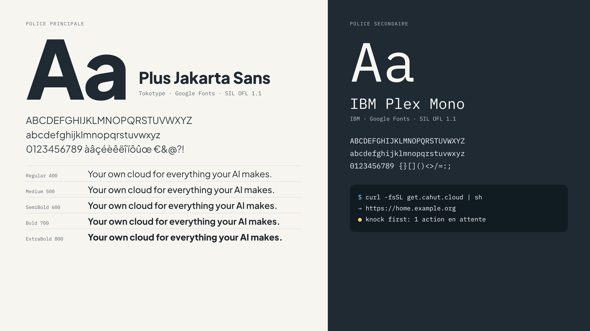
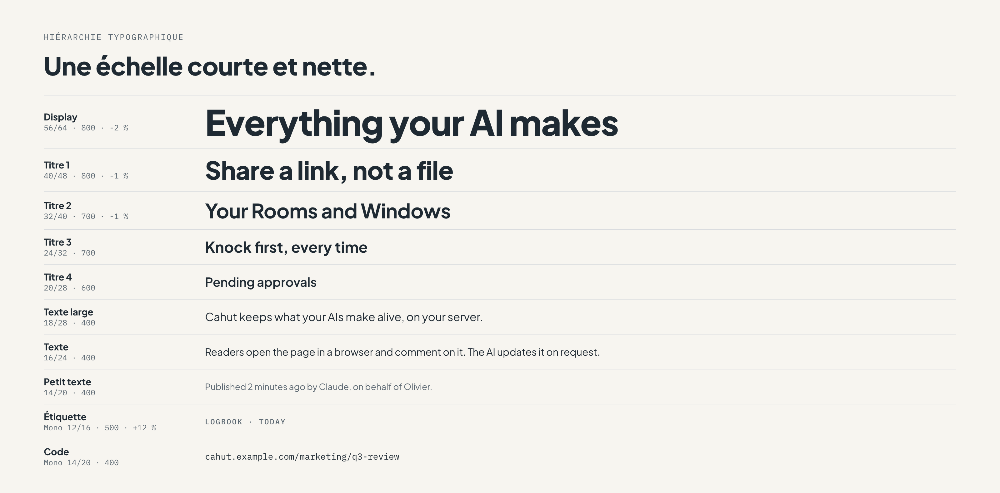
Le vocabulaire de la maison.
Pictogrammes sur une grille de 64 px, trait de 3 px arrondi, Ink et un seul accent (Sky ou Soft Yellow). Pictogrammes de navigation sur 24 px, trait de 2 px, le même accent, pour la barre latérale de la console. Icônes d’interface Lucide : 24 px, trait de 2 px, couleur du texte.
 Cahut
Cahut Room
Room Window
Window Key
Key Knock first
Knock first Logbook
Logbook Vue d’ensemble
Vue d’ensemble Knocks
Knocks Logbook
Logbook Room
Room Room personnelle
Room personnelle Room d’équipe
Room d’équipe Nouvelle Room
Nouvelle Room IA et accès
IA et accès Compte
Compte Personnes
Personnes Type et limites
Type et limites E-mail
E-mail Administrateurs
Administrateurs Mises à jour
Mises à jour


Des aplats, de l’air, une porte éclairée.
Aplats sans dégradé ni ombre, traits Ink arrondis, collines Ink 100 et 200, soleil Soft Yellow, accents Sky. Pas de robots, de cerveaux ni d’étincelles magiques : Cahut ne fait pas l’IA, elle l’accueille.
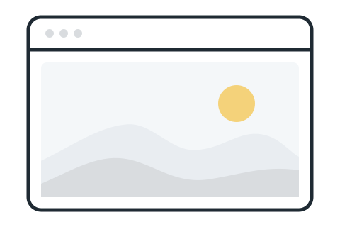
Lumière naturelle, ciel, abri, gens au travail.
Lumière du jour, tons clairs et doux, lieux réels et calmes, échelle humaine. À éviter : ambiances sombres et néons, robots, abstractions de l’IA, poignées de main de banque d’images, filtres appuyés. Texte sur photo seulement dans une zone calme, sur un bandeau Paper ou un voile Ink à 60 %.
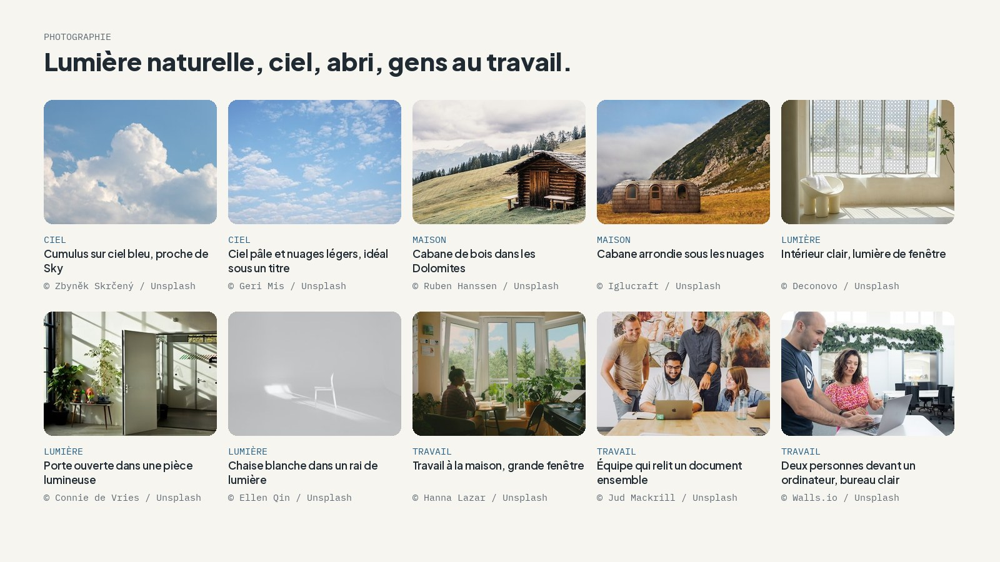
Sélection Unsplash, crédits dans README.md et selection.json. Pleine résolution : sh photos/telecharger-photos.sh.
La console, en clair et en sombre.
Grille de 4 px, rayons de 10 px (contrôles) et 16 px (cartes), bordures Light Grey, ombres légères. Bouton principal Ink, bouton accent Sky avec texte Ink. L’accès d’une Window porte toujours une icône et un mot. Kit : cahut-ui.css, composants, console.
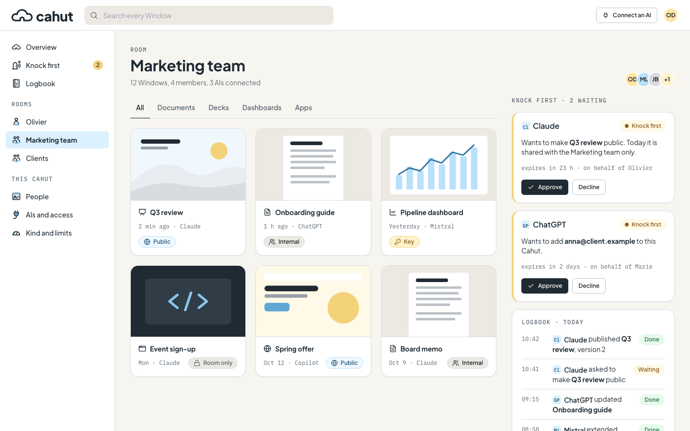
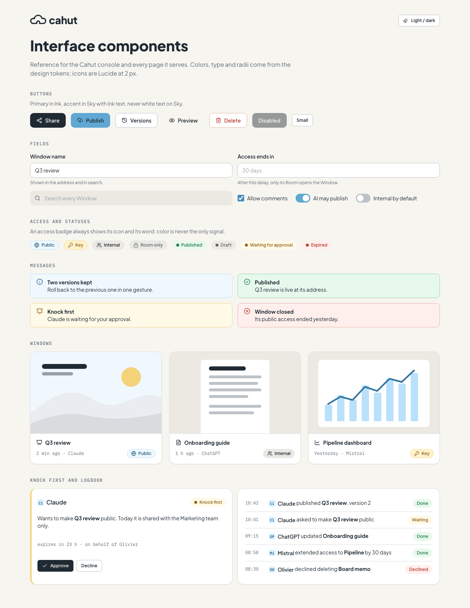
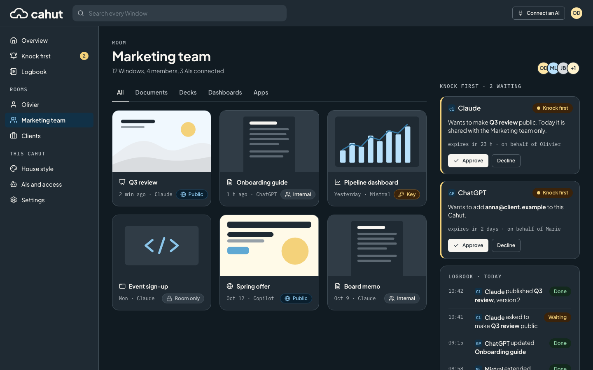
Partout, la même maison.
Chaque visuel a son gabarit HTML modifiable dans applications/gabarits. Sur GitHub, LinkedIn, X et ailleurs, l’avatar est toujours avatar-reseaux.png, le symbole Ink et sa porte éclairée sur Paper, carré et sans coins arrondis : chaque réseau pose son propre masque. Les bannières sont sur Paper, avec la maison ouverte à droite. Le logo de la page ou la photo du profil couvre le bas à gauche : rien dans le quart gauche de la couverture d’une page LinkedIn, rien dans le tiers gauche d’une bannière de profil, rien dans le coin inférieur gauche d’une bannière X. Sur YouTube, le texte et le logo tiennent dans la zone sûre de 1546 × 423 au centre, seule partie que montre un téléphone. Sur les pages publiées pour une organisation, sa marque passe en premier ; Cahut se limite au badge « Hosted on Cahut ».

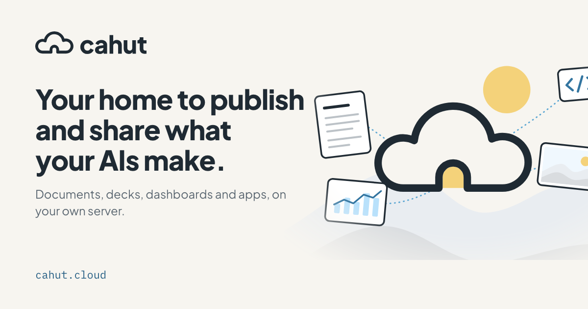
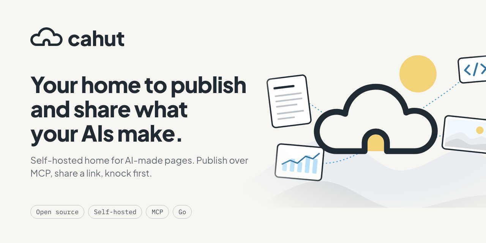
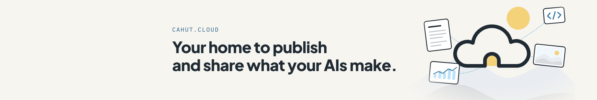
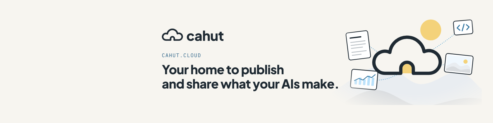
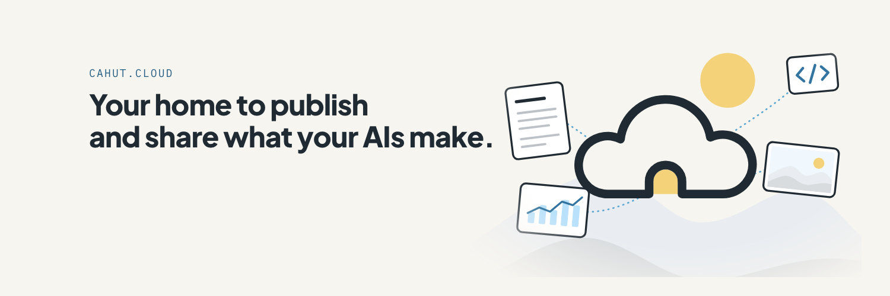
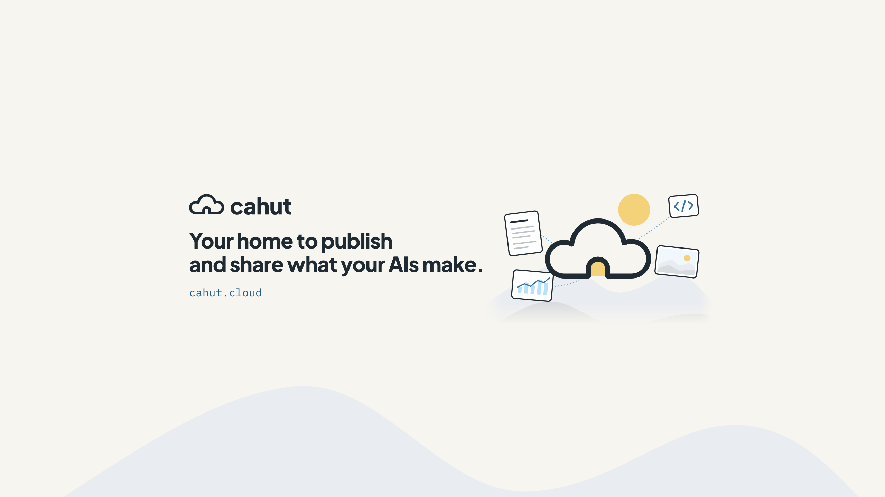
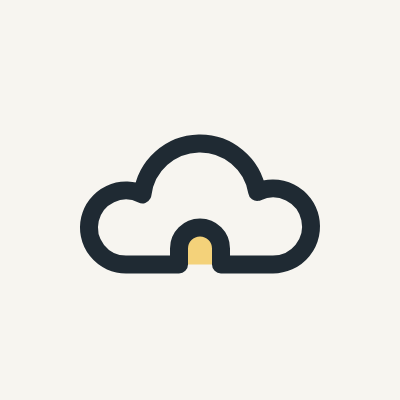
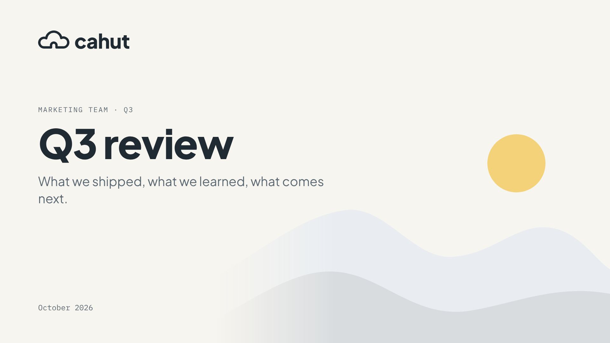
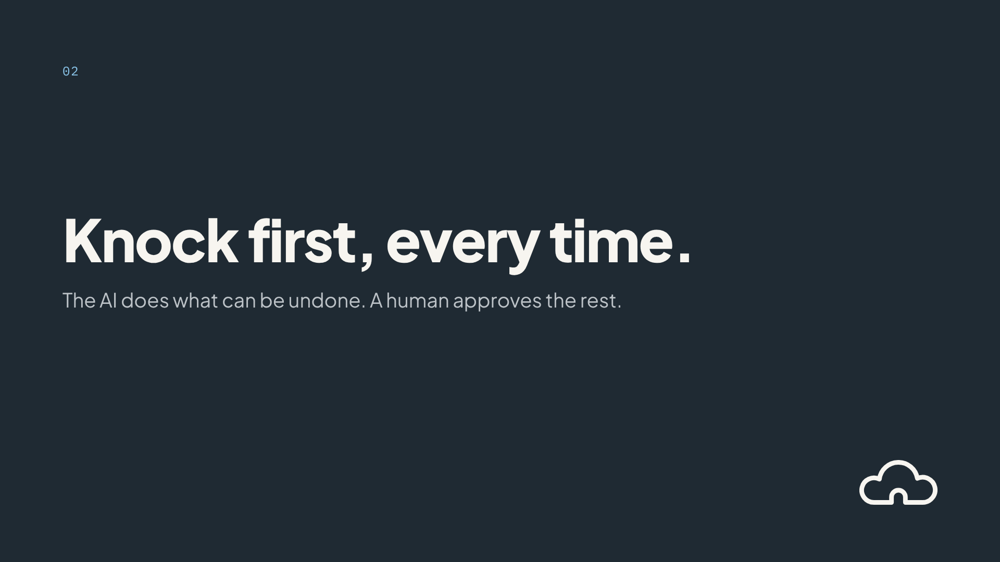
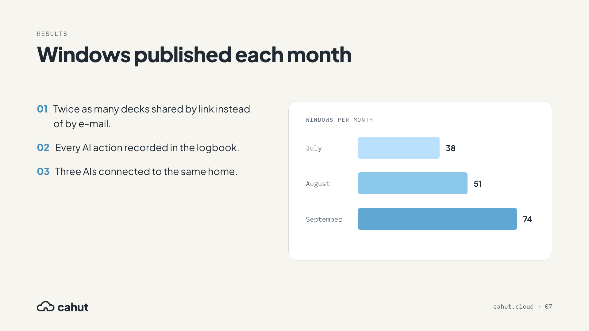
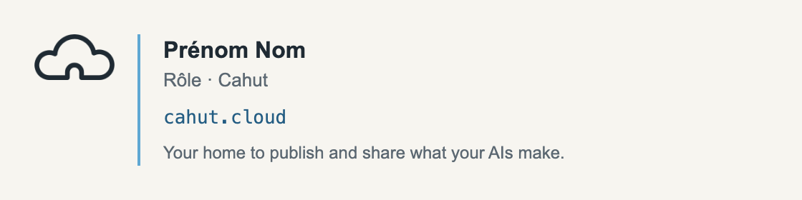
La langue de la maison.
Anglais simple pour le produit. Phrases courtes, verbes concrets, on dit quelle IA agit et au nom de qui. Pas de capitales d’alarme, pas de promesse magique. Le nom s’écrit Cahut dans le texte, une instance aussi (« your Cahut ») ; « cahut » seulement dans le logo.
| Mot | Ce qu’il désigne |
|---|---|
| Cahut | Une instance sur votre serveur, à son propre domaine |
| Room | Un espace personnel ou d’équipe |
| Window | Une page vivante : document, présentation, tableau de bord, appli |
| Key | Le mot de passe qui ouvre une Window protégée |
| House style | La charte de l’organisation, appliquée par toutes les IA |
| Knock first | L’IA frappe avant toute action irréversible |
| Logbook | Le registre de toutes les actions |
| Écrire | Éviter |
|---|---|
| Claude wants to make Q3 review public. | AI ACTION REQUIRED!! |
| Share a link, not a file. | Revolutionize your AI workflow. |
| Published. The previous version is kept. | Success! Your content has been deployed. |
| This Window closed yesterday. | Error 403: access forbidden. |
Tout pour commencer.
Les SVG sont la source de vérité ; les PNG servent quand le SVG n’est pas accepté. Toute évolution du logo, de la palette ou des jetons passe par cette charte et change son numéro de version.
logos/Exports PNGlogos/png/Faviconslogos/favicon/Jetons CSStokens/cahut-tokens.cssJetons JSONtokens/cahut-tokens.jsonPolices webtokens/cahut-fonts.cssNuancier Adobecouleurs/cahut-palette.asePalette GIMPcouleurs/cahut-palette.gplPolices TTFtypographie/polices/ttf/Pictogrammesicones/Illustrationsillustrations/Photosphotos/Kit d’interfaceui/Gabaritsapplications/gabarits/Charte complèteREADME.mdPDFcharte-graphique-cahut.pdfPolices Plus Jakarta Sans (Tokotype) et IBM Plex Mono (IBM), SIL Open Font License 1.1. Icônes d’interface Lucide, licence ISC. Photos Unsplash, licence Unsplash.